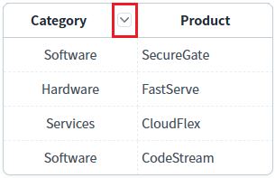
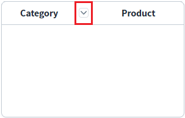
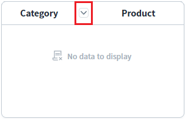

GridView의 'hideFilterIconOnNoData' 속성을 사용하여 출력된 데이터가 없으면, 헤더에 필터 아이콘이 표시되지 않도록 설정한 예제입니다. 이 속성은 필터 기능이 사용되도록 설정되었을 때 동작합니다.
속성의 설정에 따른 동작은 다음과 같습니다.
true : GridView에 출력된 데이터가 없으면 헤더에 필터 아이콘이 표시되지 않습니다.
false : [default] GridView에 출력된 데이터의 유무와 상관 없이 헤더에 필터 아이콘이 표시됩니다.
속성 'hideFilterIconOnNoData' 사용
(기본 설정) 속성 'hideFilterIconOnNoData' 미사용
1
STEP 1: 초기 상태를 확인합니다.
예제 영역 "'hideFilterIconOnNoData' 속성 사용"에 구성된 GridView를 확인합니다.
GridView에 출력된 데이터는 없으며, 'Category' 헤더 컬럼에 필터 아이콘이 표시되지 않습니다.Image 1.브라우저(Chrome) 실행 예시
2
STEP 2: GridView와 연결된 DataList의 데이터를 출력합니다.
'1.1 데이터 할당하기' 버튼을 클릭합니다.3
STEP 3: 실행된 결과를 확인합니다.
GridView에 데이터가 출력되고, 'Category' 헤더 컬럼에 필터 아이콘이 표시됩니다.
Image 2.브라우저(Chrome) 실행 예시

4
STEP 4: GridView와 연결된 DataList의 데이터를 제거합니다.
'1.2 데이터 제거하기' 버튼을 클릭합니다.5
STEP 5: 실행된 결과를 확인합니다.
GridView에 할당된 데이터는 없으며, 'Category' 헤더 컬럼에 필터 아이콘이 표시되지 않습니다.
Image 3.브라우저(Chrome) 실행 예시
1
STEP 1: 초기 상태를 확인합니다.
예제 영역 "(기본 설정) 'hideFilterIconOnNoData' 속성 미사용"에 구성된 GridView를 확인합니다.
GridView에 할당된 데이터는 없으며, 'Category' 헤더 컬럼에 필터 아이콘이 표시되어 있습니다.Image 4.브라우저(Chrome) 실행 예시

2
STEP 2: GridView와 연결된 DataList의 데이터를 할당합니다.
'2.1 데이터 할당하기' 버튼을 클릭합니다.3
STEP 3: 실행된 결과를 확인합니다.
GridView에 데이터가 출력되고, 'Category' 헤더 컬럼에 필터 아이콘이 표시됩니다.
Image 5.브라우저(Chrome) 실행 예시
4
STEP 4: GridView와 연결된 DataList의 데이터를 제거합니다.
'2.2 데이터 제거하기' 버튼을 클릭합니다.5
STEP 5: 실행된 결과를 확인합니다.
GridView에 할당된 데이터는 없으며, 'Category' 헤더 컬럼에 필터 아이콘이 표시됩니다.
Image 6.브라우저(Chrome) 실행 예시

1
STEP 1: GridView의 속성을 정의합니다.
[필수] hideFilterIconOnNoData="true"
(옵션 설명)
- true : GridView에 할당된 데이터가 없으면 헤더에 필터 아이콘이 표시되지 않습니다.
- false : [default] GridView에 할당된 데이터의 유무와 상관 없이 헤더에 필터 아이콘이 표시됩니다.
[선택] useFilterList="true"
필터 아이콘을 클릭하면 컬럼의 데이터를 SelectBox로 표시합니다.
2
STEP 2: GridView 헤더의 컬럼 속성을 정의합니다.
[필수] useFilter="true"
[default:false, true] 필터 사용 여부.
hideFilterIconOnNoData
[header column] useFilter